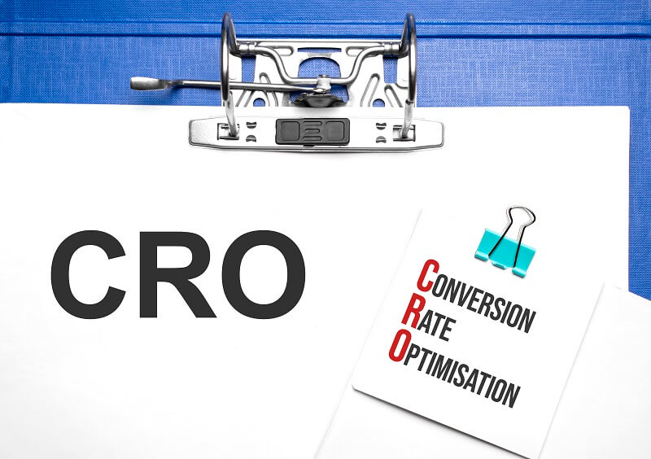

Запуск рекламных кампаний предполагает оценку их результативности. Для этого в интернет-маркетинге применяется множество метрик, одна из которых – CR (конверсия).
Далее в статье рассмотрим, что это такое, как и для чего рассчитывать коэффициент, кому это нужно и многое другое.

Что значит CR
CR или Conversion rate – коэффициент конверсии.
Конверсия – процент лидов – пользователей, совершивших целевое действие, от общего количества пользователей на конкретном уровне воронки продаж.
В качестве целевого может выступать любое действие посетителя, которое прямо или косвенно приближает его к главной цели компании – продаже.
Чаще CR определяют для таких целевых действий:
- клик по рекламе или переход на сайт;
- подписка на рассылку;
- заказ обратного звонка;
- переход в каталог товаров;
- добавление товара в корзину;
- оформление заказа или заявка;
- активность в социальных сетях (репосты, лайки, комментарии, подписки).
Конверсия позволяет понять, насколько правильно настроена и эффективна рекламная кампания. Показатель подсчитывают на каждом этапе воронки продаж, в т. ч. чтобы отследить и скорректировать слабые места.
Чем отличается CR от CTR
CTR (аббревиатура расшифровывается как click-through rate) – это коэффициент кликабельности рекламных объявлений и одна из разновидностей конверсии. Его рассчитывают как соотношение кликов по рекламе и общего числа ее показов.
{kind=link}
CTR = Количество переходов по рекламе / Число показов * 100%
Например, рекламный баннер был показан 1 000 раз, а кликнули по нему 70 человек. CTR составит 7%.
В ситуациях, когда стоит задача получить максимум переходов по ссылке или в определенный раздел сайта, можно считать, что CTR = CR. Чаще этот показатель вычисляют, чтобы оценить, как работает баннер, тизер или другой вид рекламного объявления. Если же задача другая, рассчитать CR придется дополнительно.
Например, если из 70 кликов по баннеру заявку оставили 32 человека, то конверсия в заявку составит:
CR = 32 * 100% / 1 000 = 3,2%
При этом CR и CTR отличаются.
Сравним эти показатели более детально.
|
Характеристики |
CR |
CTR |
|
Расшифровка |
Conversion rate |
Click-through rate |
|
Значение |
Коэффициент конверсии |
Коэффициент кликабельности |
|
Для чего нужен |
Чтобы отслеживать, сколько пользователей переходят с одного уровня воронки на другой, при арбитраже трафика |
Чтобы оценить эффективность объявления, правильность настройки рекламы, выбора целевой аудитории |
|
Варианты конверсии |
Любые: в заявку, покупку, регистрацию, подписку, повторный заказ, коллбек и т. д. |
Из просмотров рекламы в клики по ней |
Для чего нужно подсчитывать конверсию
Рациональное управление бизнесом невозможно без подсчета конверсии и других важных метрик. CR позволяет оценить насколько эффективен маркетинг, его инструменты и реклама в плане лидогенерации, включая работу сайта, на разных этапах привлечения клиентов.
Подсчет коэффициента позволяет компании решать ряд важных задач.
{kind=link}
- Оценивать результативность лидогенерации. Метрика показывает, насколько эффективно на сайт приходят новые лиды.
Пример. Контекстная реклама приводит 150 человек ежедневно, цена одного клика в среднем 50 р. Генерация трафика стоит около 7 500 р. в день. Однако из привлеченных пользователей лидами становятся лишь 6 человек. Можно сделать вывод, что при хорошо работающей рекламе слабым звеном выступает целевая страница, над которой и предстоит поработать. - Тестирование нововведений на сайте. Играют роль любые изменения: дизайн, цветовая гамма, формы заказа, оффер, призывы, кнопки, полезные материалы и т. д.
Пример. Стоит задача поменять оффер на лендинге. Рассматривается несколько вариантов. Чтобы определиться с формулировкой, нужно сгенерировать целевой трафик примерно в равном объеме на каждый оффер, затем сравнить CR и выбрать тот вариант, который даст больший коэффициент. - Отслеживание конверсии каждого уровня воронки. Это помогает определить эффективность маркетинга поэтапно, в т. ч. отследить реакции пользователей на движения компании и точечно скорректировать последние.
Пример. За неделю на сайт зашло 1 300 пользователей, 400 из них посетили страницу товара, 180 добавили его в корзину, 8 оплатили заказ.
CR в добавление в корзину = 180 / 1 300 * 100% = 13,8%
CR в покупку = 8 / 1 300 * 100% = 0,6%
Можно сделать вывод, что потенциальные клиенты охотно кладут товар в корзину, но реальных покупателей очень мало. Это говорит о возможных проблемах с настройкой корзины (нет напоминаний об отложенных товарах или они не сохраняются, когда пользователь уходит с сайта). - Выявление слабых участков в работе. Коэффициент указывает на места, о которые «спотыкается» и уходит часть клиентов.
Пример. Потенциальные клиенты успешно проходят воронку до тех пор, пока не начинают общаться с менеджером по телефону. Это означает, что причиной ухода лидов могут быть неэффективные скрипты продаж, которые используются в настоящее время. Необходимо их улучшить и протестировать. - Прогноз расходов и оценка рентабельности инвестиций. Коэффициент позволяет просчитывать стоимость одного клиента, разрабатывать план продаж для сотрудников, отслеживать динамику и т. д.
На конверсию влияет множество факторов: сфера деятельности, конкуренция, средний чек и т. д. Так, агентство недвижимости будет иметь гораздо меньший CR, чем газетный киоск, но прибыль с продаж несравнима.
Где применяют коэффициент конверсии
Conversion rate – один из ключевых показателей современного интернет-маркетинга и рекламы. С его помощью можно увидеть реальные цифры лидогенерации, оценить эффективность маркетинга и его инструментов.
Некоторые считают, что расчет конверсии актуален только в интернет-среде, но это не так. Оффлайн-компании не меньше нуждаются в отслеживании и оценке маркетинговых показателей.
Многоэтапная работа с клиентами в любом бизнесе должна сопровождаться определением конечных и промежуточных результатов на ключевых этапах. Так, классическая стратегия включает 5 главных стадий:
- Привлечение клиента.
- Интерес.
- Удержание.
- Вовлечение.
- Продажа.
CR позволяет определить коэффициент для каждого из этапов, отследить, как меняются показатели при переходе от одной ступени к другой, затем определить итоговую конверсию.
Расчет конверсии актуален всегда, когда основная задача – получить выгоду от привлеченных пользователей, а не сам факт их привлечения.
Как считать Conversion Rate
Прежде всего нужно определиться с четырьмя элементами воронки, которые служат основой расчета CR. К ним относятся:
{kind=link}
- Посещаемость – нужно знать, сколько человек заходит на ресурс за конкретный период.
- Число лидов – это лица, которые нажимают на кнопку, звонят или заказывают обратный звонок, отправляют форму со своими контактами и т. д.
- Конверсия – это заданные целевые действия, например, покупка, запись на пробный урок, скачивание приложения.
- Количество конверсионных целей – учитываются только достигнутые цели за выбранный период.
Чтобы считать конверсию, нужны всего два показателя:
- общее число посетителей сайта или целевой страницы за заданный период;
- количество пользователей, которые совершили целевое действие за этот же период.
Чтобы вычислить CR, нужно:
- Определить период времени, за который будет проводиться расчет.
- Узнать, сколько всего пользователей зашло на сайт в обозначенное время.
- Узнать, сколько конверсий было совершено за этот период.
- Разделить количество конверсий на общее число посетителей.
- Полученный результат умножить на 100%.
Расчет CR актуален:
- отдельно для каждого уровня воронки продаж;
- для каждого рекламного канала и канала продаж;
- для конкретного региона, города, района, если бизнес имеет сеть представительств;
- для интернет-магазина, что помогает оценить эффективность его работы;
- для анализа работы конкретного менеджера.
Рассчитывать CR можно за любой период: день, неделю, месяц, квартал, полгода, год.
Как отслеживают конверсию
Прежде чем начать отслеживать конверсию сайта, нужно ее создать. Для этого в профиле Google Ads (раздел «Отслеживание») необходимо перейти в раздел «Конверсия» и добавить первую позицию, нажав «+».
Зная конверсию, можно:
- отследить звонки по указанному на сайте номеру;
- отследить страницу сайта, на которой была целевая активность;
- отследить скачивание и запуск приложения;
- импортировать отчет при интеграции с Google Analytics.
Формула расчета
Формула CR выглядит следующим образом:
{kind=link}
CR = Число пользователей, совершивших целевое действие / Общее количество посетителей * 100%
Количества посетителей и конверсий должны быть взяты за одинаковый отрезок времени. Нельзя использовать в вычислениях цифры конверсий за месяц, а посещаемости за неделю.
Расчет показателя CR: калькулятор
Быстро вычислить CR без ручных расчетов можно с помощью онлайн-калькулятора. В сервисе нужно указать те же исходные данные, что и в формуле, после чего система моментально посчитает и выдаст результат.
Примеры расчета CR
Рассмотрим несколько примеров расчета, которые помогут понять, как посчитать CR в разных случаях.
Пример 1 – конверсия продаж
Онлайн-школа дизайна продала через лендинг 86 обучающих курсов за месяц. За этот же период посадочную страницу посетило 2 200 пользователей.
CR = 86 / 2 200 * 100% = 3,9%
Конверсия из посещений в продажи составила 3,9%.
Пример 2 – конверсия в рекламе
Запущена контекстная реклама бесплатного вебинара в Яндекс Директ. За 14 дней объявление принесло 12 652 визита на сайт, из которых 2 846 пользователей зарегистрировались на вебинар.
CR = 2 846 / 12 652 * 100% = 22,5%.
Пример 3 – средняя конверсия сайта
Интернет-магазин одежды посещает 600 человек в месяц, из которых покупки совершает 95 пользователей.
CR = 95 / 600 * 100% = 15,8%.
Какая конверсия считается «хорошей», а какая – «плохой»
CR – такая метрика, которую нельзя однозначно назвать хорошей или плохой. Показатель определяется рядом сопутствующих параметров, например:
- сфера деятельности;
- нюансы, которые характеризуют бизнес-процессы конкретной компании;
- продукция;
- средний чек;
- конкуренция и т. д.
Автосалон «Феррари» будет иметь CR гораздо ниже, чем магазин мелкой бытовой техники. Но покупка одного автомобиля приносит автосалону такую прибыль, для получения которой магазину быттехники придется работать целый год.
Приводим усредненные CR для разных сфер бизнеса:
- 10% – финансы, инвестирование, медиа, реклама;
- 8% – медицина, образование;
- 7% – сфера IT, разработка ПО;
- 5% – производство, инновации;
- 4% – туризм;
- 3% – оптовые и розничные онлайн-продажи;
- 2% – некоммерческие организации.
Усредненные числа не должны выступать эталоном, но молодые компании, которые только открываются и не имеют собственных данных, могут ориентироваться на эти значения.
Как увеличить коэффициент конверсии
Конверсия зависит от множества факторов. На большинство из них можно повлиять, улучшив значение показателя. Рассмотрим, что же можно сделать, чтобы пользователи охотнее выполняли целевые действия, и конверсия повышалась.
{kind=link}
- Анализируем, почему не выполняются целевые действия. На этом этапе полезно привлечь независимую фокус-группу и проследить за действиями пользователей на сайте.
- Меняем и тестируем контент и дизайн. Если реклама, оффер или призыв к действию «не цепляют», дизайн не привлекает, не появляется желание прочесть текст, а изображения и видео неинформативны, это одна из главных причин низкой конверсии. Важно разработать и протестировать несколько вариантов контента и дизайна. Если предполагается несколько изменений, тестировать их необходимо поочередно.
- Улучшаем карточки товаров. Посетители могут уходить без оформления заказа из-за отсутствия важной информации о товарах: технических характеристик, отзывов, подробных фотографий, данных о гарантиях, оплате, доставке.
- Добавляем полезный и уникальный контент. Качественные фото и видео о продукции, релевантные инфографики, ссылки на соцсети, поиск по сайту, новости компании или полезные статьи из блога – все это помогает людям получать актуальную информацию и повышает конверсию.
- Проводим SEO- и маркетинговую оптимизацию. Использование правильных ключевых слов в текстах и офферах, структура, которая незаметно проводит человека по воронке, положительно сказывается на показателе.
- Делаем сайт интуитивно понятным и удобным. Порой посетители «теряются» на сайте, им приходится слишком долго искать страницу с нужным товаром или важную информацию. Стоит избегать запутанной структуры. По статистике, если за 3-4 клика посетителю не удается найти нужный товар или информацию, с вероятностью 90% он не сделает заказ.
- Используем призывы к действию. Понятные призывы без дополнительных условий помогают человеку решиться на конвертирующее действие. Усиливают эффект бонусы, которые человек может получить, став лидом.
- Упрощаем форму заказа. Большое количество полей отпугивает пользователей. Люди не готовы разглашать много информации о себе. Сокращение формы до 1-2 полей может значительно повысить конверсию.
- Ограничиваем время. Небольшой таймер, отсчитывающий время до окончания акции, способен стимулировать пользователей подписаться или купить товар.
- Запускаем релевантную рекламу. Сегментация целевой аудитории и персонализированная реклама для каждой группы ЦА значительно повышает CR.
Работа над повышением показателя – это, по сути, CRO (Conversion Rate Optimization) или оптимизация коэффициента конверсии.

Если мероприятия по улучшению привели к росту показателя, можно говорить об успешной оптимизации.
Инструменты аналитики для отслеживания Conversion Rate
Когда бизнес простой и небольшой, собирать данные и рассчитывать CR можно вручную. Но при расширении бизнеса и объемов данных, увеличении количества целевых действий рационально использовать для отслеживания конверсий специальные инструменты.

Самые распространенные:
- Яндекс.Метрика;
- Google Analytics.
Они максимально точно собирают данные и позволяют узнать;
- откуда люди приходят на сайт;
- что делают на странице, куда кликают, какой процент страницы просматривают, какой контент прокручивают;
- сколько времени проводят на сайте.
Сервисы аналитики позволяют задавать конверсионные цели на разных этапах воронки и следить за их достижением. Система фиксирует выполнение условий и автоматически считает конверсию. Результаты доступны в соответствующих отчетах.
Отслеживать CR за пределами сайта помогают другие сервисы и ПО:
- в контекстной рекламе – управляющие аккаунты Яндекс.Директ и Google Ads;
- в Facebook и Instagram – Facebook Ads Manager.
Удобно собирать данные для аналитики можно с помощью сервисов NEIROS, Funnel.io, Tableau, Mixpanel.
Если бизнес предполагает и онлайн-, и оффлайн-коммуникации с клиентами, для их отслеживания могут понадобиться специальные корпоративные программы: CRM, сервисы коллтрекинга и т. д.
Как расшифровать результаты расчета CR
Мы уже знаем, что «хорошей» и «плохой» конверсии не существует. В каждом случае нужно оценивать качественный результат. Оптимально – сравнивать его с показателями за предыдущие периоды и делать выводы с учетом динамики.
Чтобы понять, почему нельзя ориентироваться на «голые» цифры и показатели аналогичных компаний, рассмотрим два примера.
Пример 1. Начинающий мастер маникюра создал лендинг для продажи услуги через интернет со скидкой. Конверсия за неделю составила 50%. Но радоваться рано, ведь на страницу зашло всего 2 пользователя, а человек, который оставил заявку, – подруга мастера.
Пример 2. Застройщик продает загородные коттеджи через сайт. В последнем месяце конверсия в покупку составила 2% от числа всех посетителей (8 000 человек). На первый взгляд, 2% – немного, но по факту это 160 человек, которые реально купили по коттеджу. В пересчете на деньги – отличный результат.
Как видно, на итог влияет масса сопутствующих факторов, которые нельзя игнорировать в погоне за средними цифрами.
Часто задаваемые вопросы
Конверсия определяет продажи и прибыль компании, помогает оценивать производительность приложений и сайтов, дает понимание степени достижения бизнес-целей. Повышение CR – один из способов сокращения расходов при неизменных доходах.
Conversion rate рассчитывается в процентах.
Крупные CPA-сети обязательно рассчитывают конверсию для каждого оффера. При выборе партнерской программы это ключевой показатель, на который нужно ориентироваться. Чем выше CR, тем больше можно заработать.
Согласно опросу Databox, самая большая группа – это лендинги с конверсией 1-10%. За ней следует группа с CR в пределах 21-30%, следующая – 11-20%.
Маркетологи считают «хорошим» показатель конверсии, лежащий в диапазоне 21-50% и 3-5%. Очевидно, что разброс обусловлен сферой деятельности компании.
Так, при определении оптимального значения, стоит брать за основу цифры конверсии в своей сфере, а также учитывать усредненные показатели.
Заключение
Расчет конверсии в маркетинге – это возможность выявить эффективные инструменты и слабые места, провести оптимизацию, узнать, как повысить показатель, а вместе с ним и прибыль компании. Но «хорошие» цифры могут быть обманчивы. Важно устанавливать собственные «планки» CR с учетом отрасли, специфики деятельности, продукта, среднего чека и других входных данных.
Оставить комментарий
Войти с помощью